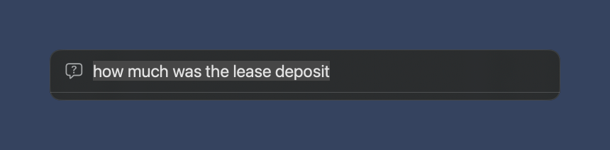
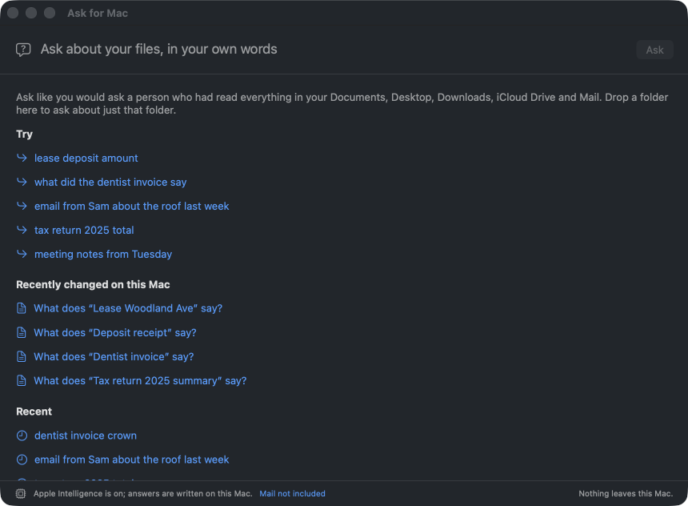

Ask your Mac a question.
Get the answer, and the file.
Your documents, downloads, iCloud Drive and mail, read on this Mac. Every answer names its source and opens it. Nothing leaves the Mac.
Download for macOS Free. Open source. macOS 14 or later; written answers on macOS 26 with Apple Intelligence.

How it works
Find
Your Mac already indexes every file and mail message. Ask for Mac asks Spotlight for the ones with your words, in the dates you named.Read
PDF, Word, RTF, HTML, text, Markdown, CSV and Mail, read on the Mac while it answers, and kept nowhere.Rank
Passages score on the words they contain and on meaning, using the Mac's own word embeddings. No file may take more than three places.Answer, with receipts
Apple's on-device model writes two or three sentences with [1] [2] citations, and says plainly when your files do not answer. Without it, the best sentence is quoted.
Also a command line
askmac "lease deposit last week" askmac "dentist invoice crown" --json exit 0 answered, 1 nothing found.
Honest limits
No images, Numbers, Pages, Keynote or Apple Notes yet. Mail needs Full Disk Access. It never answers from general knowledge: if it is not in your files, it says so. The update check asks GitHub once a day for a version number and can be turned off.
MIT licensed. Part of a family: keithadler.github.io.